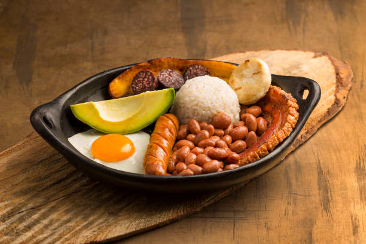

Bandeja Paisa

Bandeja paisa is a traditional colombian dish
It is often considered the country's national dish. it's a hearty and flavorful meal originated in the paisa region
Ingredients
- Cooked beans
- Pork rinds
- White rice
- Ground meat
- Chorizo
- Fried egg
- Morcilla
- ripe plantain
- Avocado
- Arepa
Steps
- Cook the beans until tender with seasoning
- Prepare the rice
- Cook the meats, cook the ground meat and chorizo until fully cooked and nicely browned
- Fry the pork rinds until they are crispy
- Fry the eggs
- Prepare the morcilla
- Fry the ripe plaintain
- Slice the avocado
- Prepare the arepa, until they are toasted
- Assemble all the ingredients together with a good presentation
- Serve and enjoy!